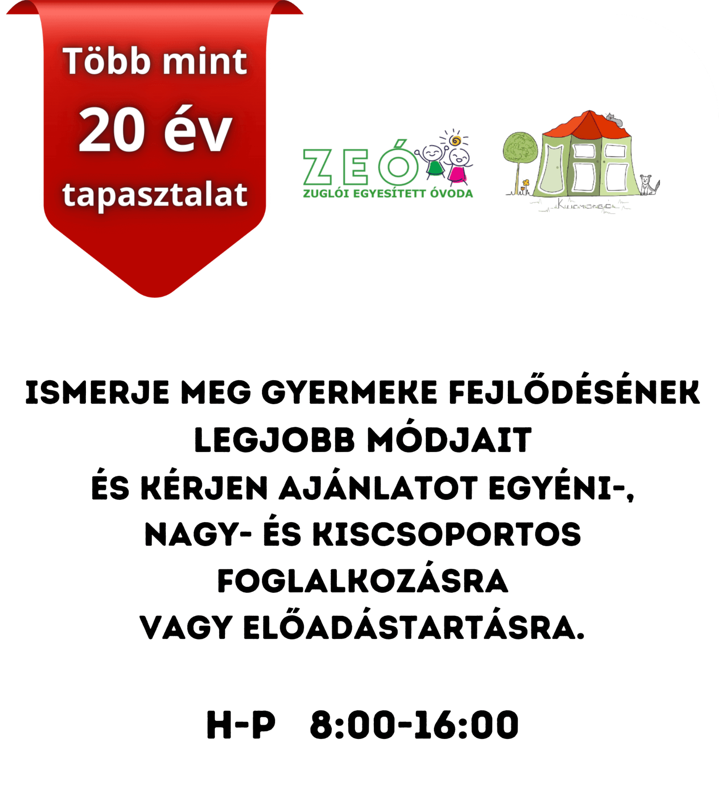
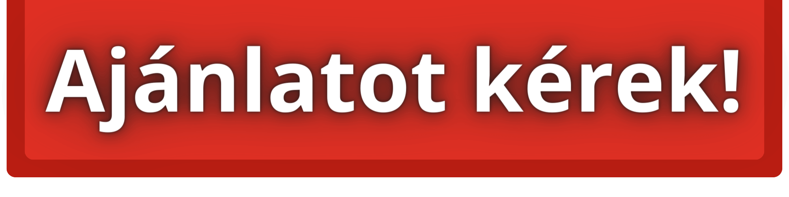
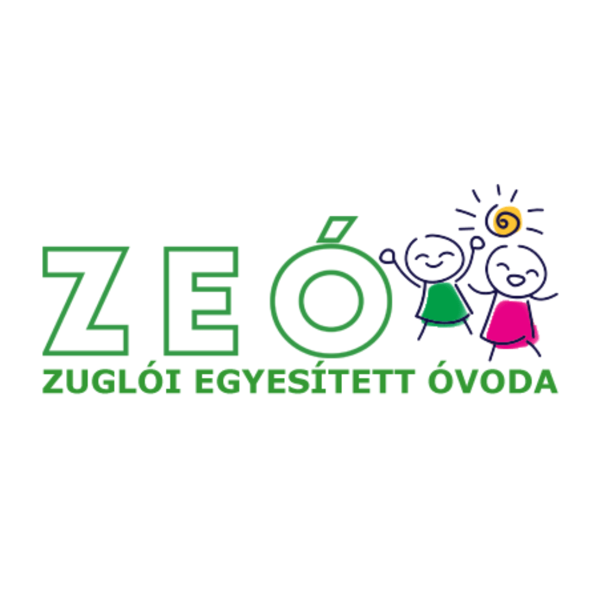
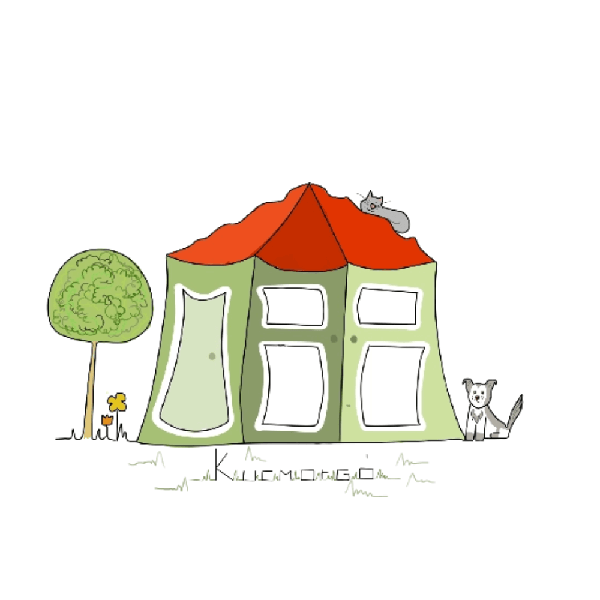

Találd meg a választ!
- Egyéni- és kiscsoportos foglalkozások
- Konzultáció és tanácsadás
- Szülőknek+
A szülőkkel és pedagógusokkal való
együttműködésre nagy hangsúlyt fektetünk, hiszen az érintett gyermekek a legnagyobb
fejlődést akkor érhetik el, ha a környezetükben lévő összes felnőtt közösen dolgozik,
gondolkodik.
A fejlesztések megkezdése előtt minden esetben sor kerül egy szülőkonzultációra, ahol
részletesen átbeszéljük a gyermek erősségeit, nehézségeit, illetve a jelenleg fennálló
problémákat a családi és intézményi környezetben. A célok meghatározása az itt
megbeszéltek és a gyermek felmérése alapján történik.
A kapcsolattartás a fejlesztési folyamat alatt folyamatos, a szülők a fejlődés menetéről
állandó tájékoztatásban részesülnek. Emellett természetesen lehetőség van konzultációs
időpontot kérni.
A konzultációk során célunk gyakorlati megoldások nyújtása a mindennapi nehézségekre,
kommunikációs és viselkedési technikák átadása, melynek eredményeképpen a szülő-gyerek
együttműködése hatékonyabb lehet.
- Szakembereknek+
A szülőkkel és pedagógusokkal való
együttműködésre nagy hangsúlyt fektetünk, hiszen az érintett gyermekek a legnagyobb
fejlődést akkor érhetik el, ha a környezetükben lévő összes felnőtt közösen dolgozik,
gondolkodik.
A fejlesztési folyamat megkezdése előtt, vagy alatt szükség esetén intézményi
megfigyelést végzünk, ezt követően pedig konzultációs lehetőséget biztosítunk a
pedagógusok számára. Ennek célja, hogy eszközöket nyújtson az érintett gyermek
intézményében felmerülő kihívást jelentő helyzetek megoldására, mely hatására a
pedagógus-gyermek együttműködése, valamint a gyermek teljesítménye is javul. A
konzultáció során igyekszünk segíteni a sajátos nevelési igényből adódó viselkedéseket
megérteni, valamint megoldási lehetőségeket adni.
- Előadástartás+
Igény esetén lehetőséget biztosítunk előre
megbeszélt témában előadás-és tudásformáló („érzékenyítő”) foglalkozás tartására, szakemberek,
szülők, illetve kortársak számára is.
Az előadás témája, tartalma a szükségleteknek megfelelően alakul.


Előszó
Az alapítvány célja a speciális igényű gyermekek és környezetük teljes körű támogatása, életminőségük
javítása. Gyógypedagógiai állapotfelméréssel, konzultációval, tanácsadással és fejlesztő
foglalkozásokkal várjuk a hozzánk forduló családokat. Fontosnak tartjuk a gyermekek környezetével
való együttműködést, valamint a tudásformálást, így előadástartást is vállalnak az érdeklődő
intézmények számára.
Munkánk során tudományosan megalapozott, gyakorlatban bevált módszereket alkalmazunk. A
foglalkozások érzelmileg biztonságos, elfogadó, játékos légkörben valósulnak meg, a gyermekek
számára érdekes, változatos feladatokkal. Az érintett készségek fejlesztése a gyermekek speciális
igényeihez alkalmazkodva történik, a pozitív tulajdonságokra, meglévő készségekre és képességekre
építve. A fejlesztési célok a megfigyelések, a felmérések, valamint a szülőkkel való konzultáció
eredményeként jönnek létre.
A foglalkozásokon való részvételhez további egyeztetések szükségesek.
„Minden gyermekben megvan a cselekvési vágy és a világmindenség megismerésének igénye, csak annak
kibontakoztatását kell segíteni.”
Maria Montessori

